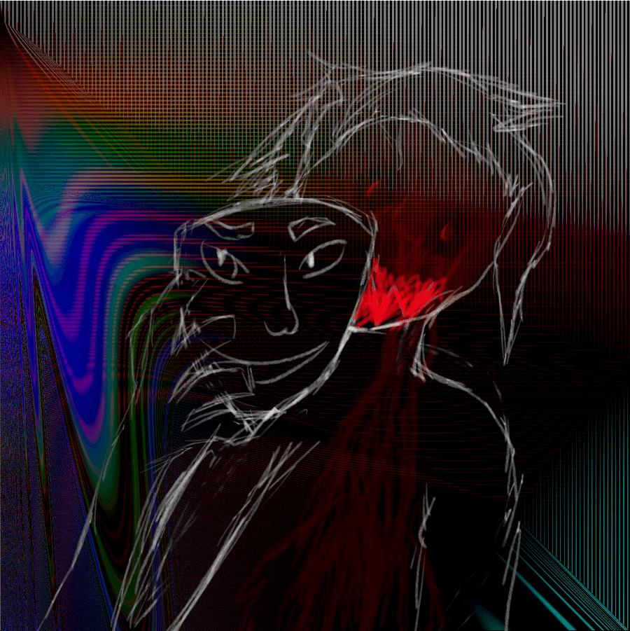

ezist
This webzone is currently being worked on.
In the meantime, why don't you check out my (horrendous) content on various sites:
- Check out how terribly I program at GitHub.
- I'm on Keybase. I don't have a witty remark for this.
- Why don't you take a look at my terrible music tastes on last.fm?
- I make post. Sometime good post I make. On Pleroma.
- See what horrible games I play on Steam (or don't, cause my profile is private)
- I don't stream on Twitch.tv!
- My Twitter is just like my Mastodon, but even more useless.
- Yes, I have a Wikipedia. Yes, I rarely use it.
Friends and/or cool people:
miro252 <miro252.neocities.org>